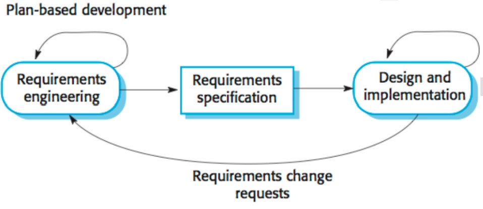
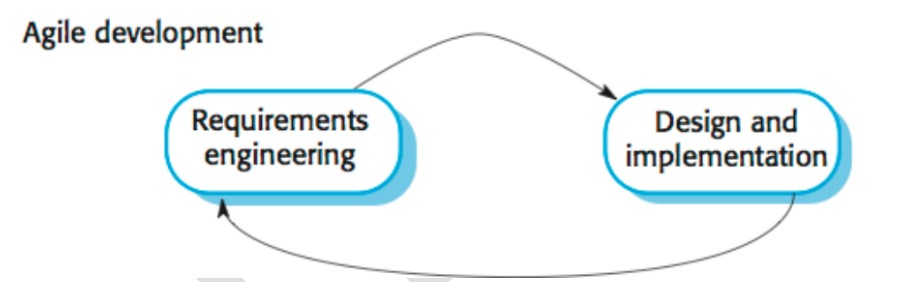
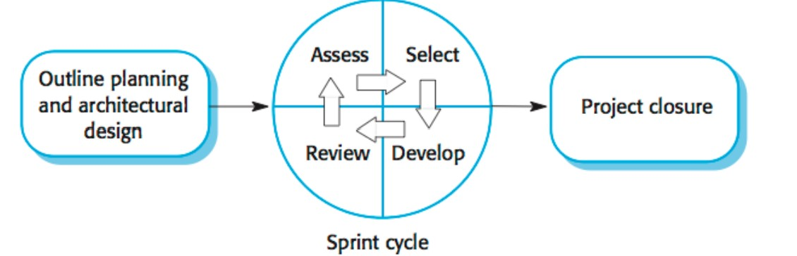
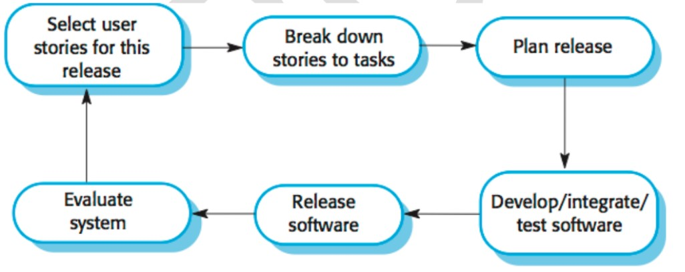

| waterfall model | Incremental model |
|---|---|
| need for detailed documentation is necessary | detailed documentation not so necessary |
| high amount of risk in waterfall model | low amount of risk in waterfall model |
| long amount of wait time for running software | small amount of wait time for running software |
| flexibility to change in waterfall model is difficult | flexibility to change in incremental model is easy |
| testing is done after the coding phase | testing is done after every iteration of the phase |
| phase/stage in the waterfall model is not possible | phase/stage in the incremental model is possible |
| overlapping of phases is not possible | overlapping of phases is possible |
| there is only one cycle in the waterfall model | multiple development cycles take place in this model |
| reusability is least possible | reusability is possible to some extent |
| RAD model | Spiral model |
|---|---|
| RAD is a SD model where by the components or functions are developed in parallel as if they were mini projects | spiral model is a software development model and made with features of incremental, waterfall or prototyping model |
| Rapid development is main objective. | High assurance is main objective. |
| It is necessary to have detailed documentation but in a limited manner | Detailed documentation is required. |
| Early stage planning is not necessary. | Early stage planning is necessary. |
| Requirements are specified as time boxed release manners. | Requirements are specified in the beginning. |
| RAD model is used between large and small projects. | Spiral model is used only and only on large projects. |
| Customer involvement is only at the beginning | Customer involvement is high as compared to RAD model |
| In RAD Model, small team sizes required. | Inspiring model, large team is required. |
| Flexibility to change in RAD model is easy. | Flexibility to change inspiring model is difficult. |
| in RAD model overlapping or phases is possible. | Overlapping of phases is not possible. |
| Cost of RAD model is low. | Cost of spiral model is high. |
| RAD model has easy maintenance | Spiral model is not easy to maintain. |

Plan-driven development
A plan-driven approach to software engineering is based around separate development stages
with the outputs to be produced at each of these stages planned in advance.
Not necessarily
waterfall model: plan-driven, incremental development is possible.
Iteration occurs within
activities.

Agile development
Specification, design, implementation and testing are inter-leaved and the outputs from the
development process are decided through a process of negotiation during the software
development process.
Most projects include elements of plan-driven and agile processes.
Deciding on the balance
depends on many technical, human, and organizational issues.
Technical, human, organizational issues
Most projects include elements of plan-driven and agile processes. Deciding on the balance
depends on:
-The Agile mode was primarily designed to help a project to adapt to change requests quickly.
-Main aim of the agile mode is to facilitate quick project completion.
-SCRUM Is a type of agile framework.It is a framework within which people can address complex adaptive problem while productivity and creativity of delivering product is at highest possible values.
-SCRUM Uses iterative process.

-There are three phases of SCRUM:

Extreme Programming
The name of the approach is coined due to iterative development at the extreme levels. In
extreme programming requirements are expressed as scenarios (called user stories) which are
implemented directly as a series of tasks.
Programmers work in pair and develop tests for each
task before writing the code. All tests must be successfully executed when new code is integrated
into the system. There is short time gap between releases of the system.
Extreme programming involves a number of practices as follows :
| Principle | Description |
|---|---|
| Incremental planning | Requirements are recorded and to be included based on their priority. |
| Small releases | The functionality required is developed first. Releases of the system incrementally add functionality to the first release |
| Simple design | Enough design is carried out to meet current requirements |
| Test first development | An automated unit test is used prior to the functional code |
| Refactoring | Changing the structure of the code without altering its behavior for code improvements |
| Pair programming | Developers work in pairs, checking each other’s code and providing the support for performing a good job |
| Collective ownership | The pair of developers work on all areas of the system, so that all developers take responsibility for all the code. Anyone can change anything. |
| Continuous integration | As soon as the work on the task is complete, it is integrated into the whole system |
| Sustainable pace | Large amounts of overtime are not considered |
| On – site customer | A representative of the end-user of the customer should be available full time for the use of the team |